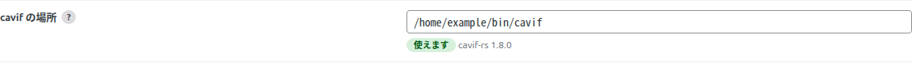
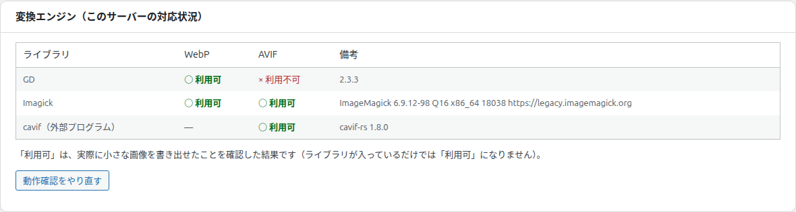

cavif で AVIF を作る
サーバーの PHP が AVIF を作れないときに、「cavif」という変換プログラムをサーバーに置いて、AVIF を作れるようにする方法です。
どんなときに使うか
「診断」タブの「変換エンジン」で、GD と Imagick の AVIF がどちらも「× 利用不可」のサーバーで使います。GD か Imagick で AVIF を作れるサーバーでは、この設定は要りません。
| 項目 | 内容 |
|---|---|
| cavif とは | 画像を AVIF に変換する、無料で配布されているプログラムです |
| 作れる形式 | AVIF だけです。WebP は、これまでどおり GD か Imagick で作ります |
| 必要なもの | サーバーにファイルを置けること（SSH か FTP）、PHP の GD |
| 使えないサーバー | PHP から外部のプログラムを実行できない設定のサーバーでは使えません（「診断」タブに理由が表示されます） |
| 設定しないとき | これまでと同じ動きです。外部のプログラムは一切実行しません |
プログラムを自分で置いて動かすことは、レンタルサーバーのサポートの対象外になることがあります。ご利用のサーバーの決まりを確認してからお使いください。
導入の手順
cavif を入手する
配布ページ（https://github.com/kornelski/cavif-rs/releases）から zip ファイルをダウンロードして展開します。Linux のサーバーでは、「linux-generic」フォルダの中の「cavif」というファイルを使います。
サーバーに置く
「cavif」のファイルを、サーバーの公開フォルダ（public_html など）の外に置きます。ファイルと、それを置いたフォルダの権限は「755」か「700」にします。
| 置き場所の例 | /home/アカウント名/bin/cavif |
| 権限 | ファイルもフォルダも 755 か 700（所有者以外が書き換えられる状態では使いません） |
設定タブで場所を入力する
プラグインの「設定」タブで「詳細設定」を開き、「cavif の場所」の欄に、手順 2 で置いた場所（例: /home/アカウント名/bin/cavif）を入力して、「変更を保存」を押します。欄の下に「使えます」と cavif の版（例: cavif-rs 1.8.0）が表示されれば、設定は完了です。

「使えません」と表示されたときは、その横の理由を見て、下の「「使えません」と表示されたとき」の表のとおりに直します。入力できるのは、プラグインをインストールできる管理者です（設定タブ）。
診断タブで確かめる
「診断」タブの「変換エンジン」に「cavif（外部プログラム）」の行があります。AVIF が「○ 利用可」になり、備考に cavif の版（例: cavif-rs 1.8.0）が表示されていれば使えます。
あわせて、同じタブの「配信テスト」で「配信テストを実行」を押し、AVIF が「正常（配信できます）」になるかを確かめます。PHP が AVIF を作れないサーバーでは、サーバーが AVIF を別の種類の画像として送っていることがあります。「注意」や「問題あり」と表示されたときは、その下に出る「自動で直す」を押します（診断タブ）。
既存の画像を変換する
新しい画像は、アップロードのときに AVIF も自動で作られます。すでにある画像は、「一括変換」タブの「一括変換を開始」で AVIF を追加で作ります（作成済みの WebP はそのまま使われます）。画像が多いときは コマンドでの操作 が速くて確実です。

設定したあとの動き
| 項目 | 動き |
|---|---|
| 使う順番 | 「変換エンジン」が「自動」のとき、AVIF は Imagick → GD → cavif の順に、作れる道具を使います。GD か Imagick で AVIF を作れるサーバーでは、cavif は予備になります |
| cavif を先に使いたいとき | 「設定」タブの「詳細設定」→「変換エンジン」で「cavif（外部プログラム・AVIF のみ）」を選びます |
| 画質 | 「設定」タブの「AVIF の画質」の数字をそのまま使います |
| 変換しない画像 | GD と同じです（CMYK の画像、sRGB 以外の色設定の画像、アニメーション画像。「PNG・GIF は劣化なしで変換」がオンのときの PNG・GIF） |
| 1 枚にかかる時間 | 写真 1 枚で数秒が目安です。大きな画像ほど長くかかります |
| 時間がかかりすぎたとき | 管理画面からの変換では 1 枚 60 秒、コマンドでの変換では 300 秒で打ち切り、その画像の AVIF は「変換できず（エンジンのエラー）」になります。WebP と元の画像の表示には影響しません |
| サーバーへの負担 | 同じサーバーの他の利用者に迷惑をかけないよう、同時に使う CPU の数を 2 つまでに抑えています |
「使えません」と表示されたとき
使えない理由は、「設定」タブの「cavif の場所」の欄の下（「使えません」の横）と、「診断」タブの「cavif（外部プログラム）」の備考に表示されます。下の表は、診断タブでの表示です。
| 備考の表示 | 対処 |
|---|---|
| 未設定（GD・Imagick で AVIF を作れないサーバー向けの、追加の手段です） | cavif を使わない通常の状態です。使うときは、上の手順 1〜3 を行います |
| 使えません: 場所は「/」から始まる絶対パスで指定してください。 | 入力した場所を、「/home/…/cavif」のように「/」から始まる形に直します |
| 使えません: 指定した場所にファイルがありません。 | 入力した場所と、実際にファイルを置いた場所が同じか確かめます |
| 使えません: ファイル名が「cavif」で始まるファイルを指定してください。 | 設定タブで入力できるのは、名前が「cavif」で始まるファイルだけです。ファイルの名前を変えている場合は、「cavif」で始まる名前に戻します（例: cavif、cavif-1.8.0） |
| 使えません: ファイルを実行できません。実行権限を確認してください。 | cavif のファイルの権限を 755 か 700 にします |
| 使えません: 所有者以外が書き換えられる状態です。… | cavif のファイルと、それを置いたフォルダの権限を 755 か 700 にします |
| 使えません: このサーバーの PHP では、外部プログラムを実行できません（proc_open が無効）。 | サーバーの設定で禁止されています。このサーバーでは cavif を使えません（WebP だけで動きます） |
| 使えません: 画像の読み込みに GD が必要です。 | サーバーの PHP に GD が入っていません。サーバーの管理者に確認してください |
| 使えません: PHP 7.4 以上が必要です。 | サーバーの PHP を 7.4 以上にします |
| 場所は指定されていますが、試しの変換に失敗しました。… | 置いたファイルが cavif かどうか、サーバーの種類（Linux など）に合ったファイルかどうかを確かめます。直したあと、「動作確認をやり直す」を押します |
使うのをやめるとき
| すること | 結果 |
|---|---|
| 「cavif の場所」の欄を空にして保存する | cavif を使わなくなります。GD・Imagick で AVIF を作れないサーバーでは、新しい AVIF は作られなくなります |
| 作成済みの AVIF | そのまま残り、表示にも使われ続けます |
| cavif のファイル | 欄を空にしたあとは、サーバーから削除して構いません |
wp-config.php で指定する（場所を固定したい人向け）
ふつうは、上の手順のとおり設定タブで入力すれば足ります。cavif の場所を設定タブから変えられないようにしたいときや、設定タブで入力できないサイトでは、WordPress の wp-config.php で指定することもできます。
wp-config.php を開き、「編集が必要なのはここまでです」（英語版では「That's all, stop editing!」）の行より上に、次の 1 行を足します。「/home/アカウント名/bin/cavif」の部分は、cavif を置いた場所に書き換えます。
define( 'KASHIWAZAKI_NEXT_GEN_IMAGES_CAVIF', '/home/アカウント名/bin/cavif' );| 項目 | 動き |
|---|---|
| 設定タブの「cavif の場所」 | 入力できなくなり、wp-config.php に書いた場所が表示されます。設定タブに保存してあった場所は使いません |
| ファイルの名前 | この方法では、名前が「cavif」で始まらないファイルも指定できます |
| cavif を使わせないとき | 場所の代わりに false を書くと（下の例）、設定タブに場所が保存されていても、cavif を使いません |
| 設定タブで入力できないサイト | プラグインのインストールを禁止しているサイトや、マルチサイトの各サイトでは、設定タブの欄を変更できません。その場合は、この方法で指定します |
| やめるとき | 足した 1 行を消します。消したあとは、設定タブの欄の内容が使われます |
define( 'KASHIWAZAKI_NEXT_GEN_IMAGES_CAVIF', false );書き換える前に、元のファイルを控えてください。1 文字の間違いで、サイト全体が表示されなくなることがあります。